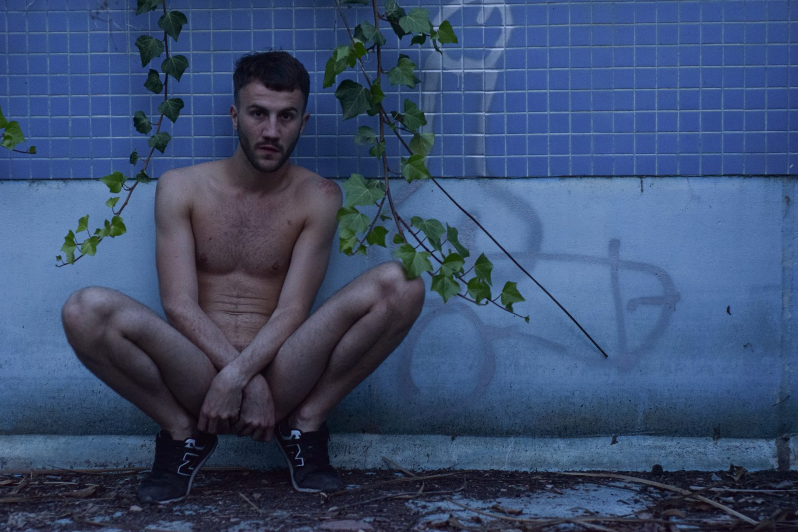
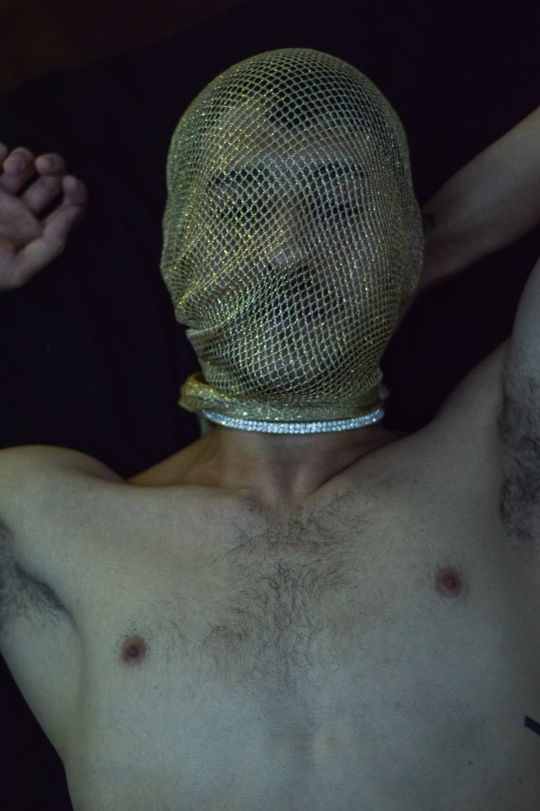
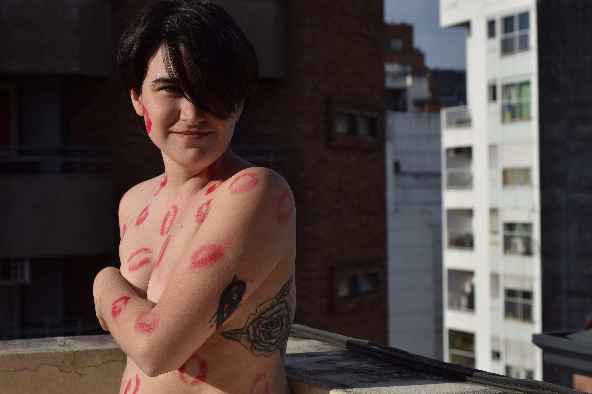
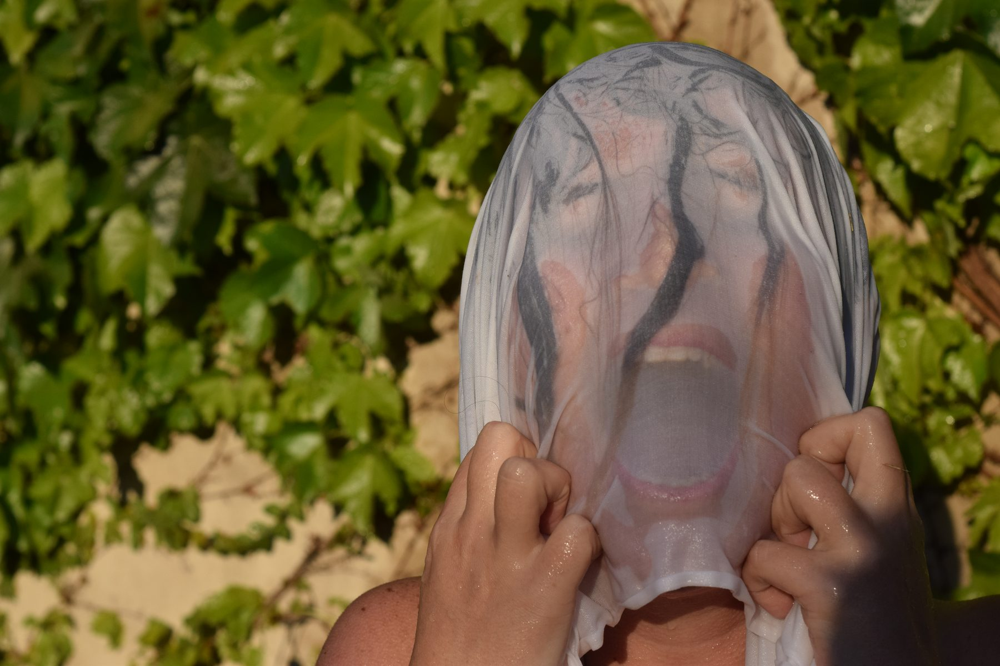
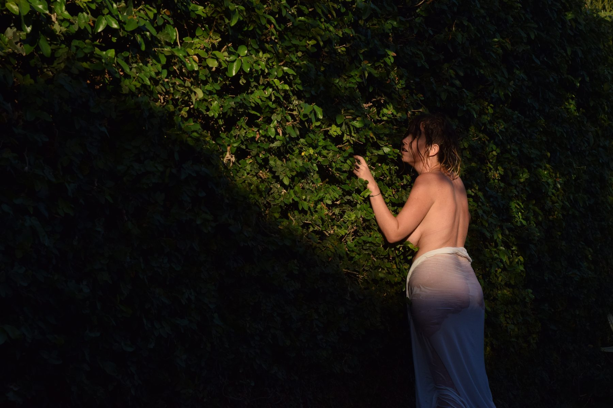
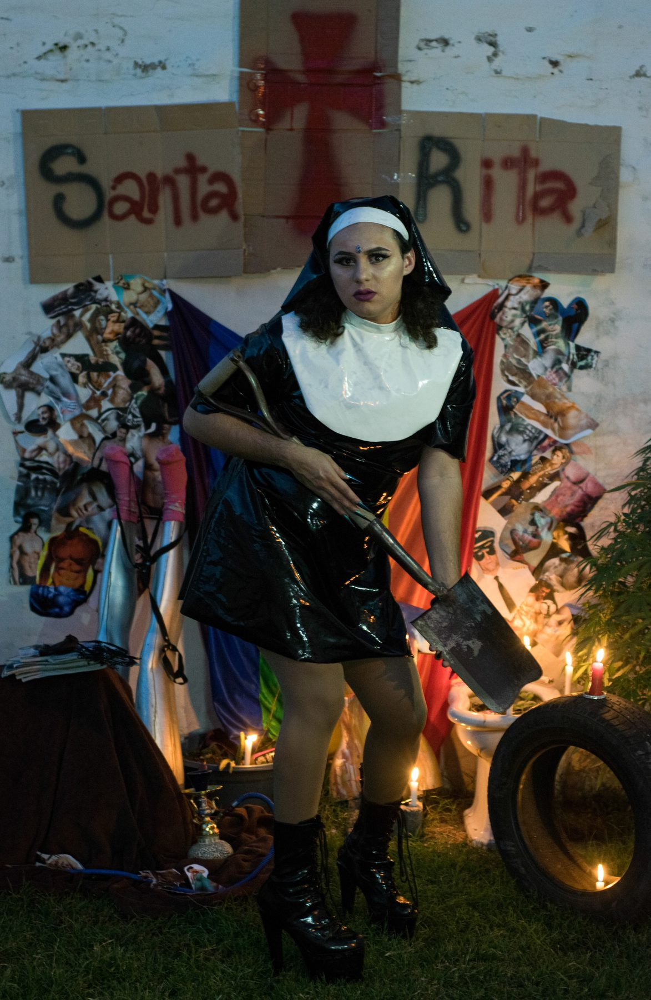
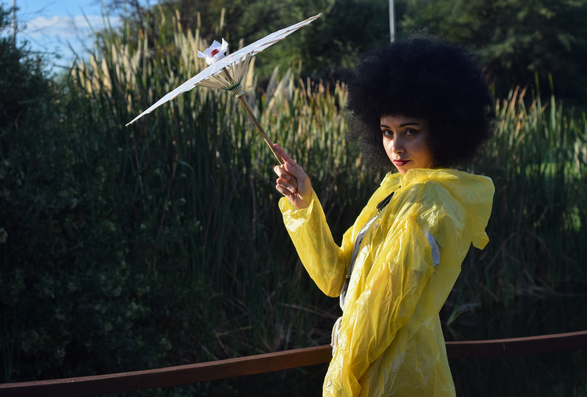
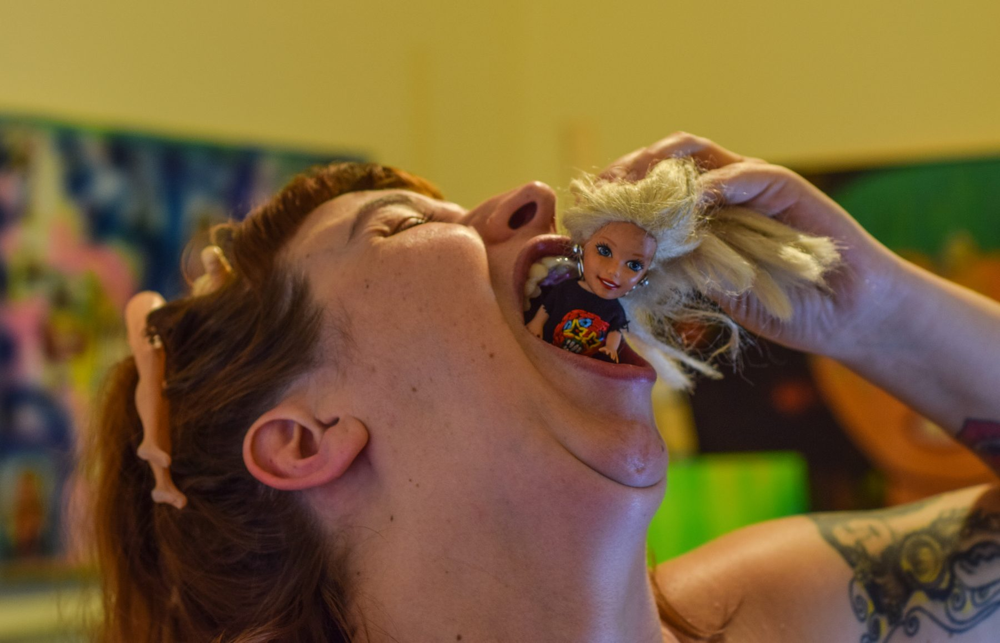
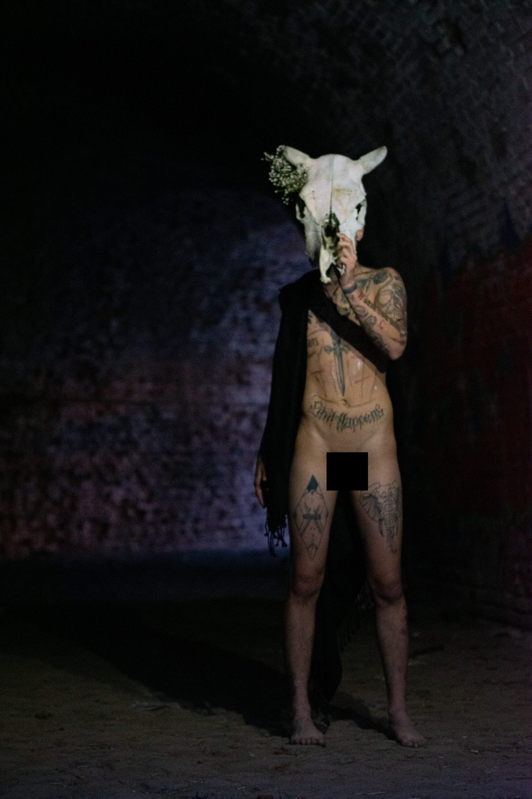
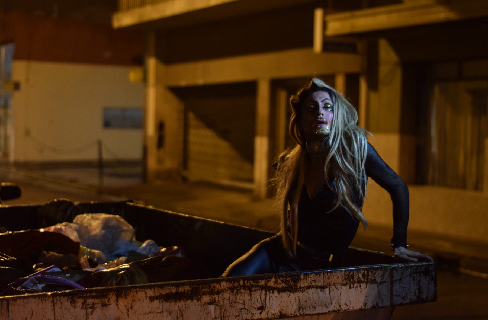

Prakash
De todo lo que conocí quiero más
más nieve, más fuego
más sexo, más calma
de toda la locura quiero más
y de toda la pureza quiero másmás honor y más deshonra
más virtud y más bajeza
de todo lo que amé quiero más
de lo que aún no he probado quiero más
de todos los excesos quiero másmás dolor
más placer
quiero másy cuando me muera
como una ráfaga y como una súplica
saldrá de mi boca la palabra más









